Зміст
1.1. Черги в обчислювальних системах.
1.2. Структура системи масового обслуговування.
1.3. Типи розподілів інтервалів між надходженнями заявок і тривалості обслуговування.
1.4. Моделі, що описуються процесами народження і загибелі.
1.5. Найпростіша модель оцінки завантаженості оператора обчислювальної системи.
1.6. Модель багатодоступної обчислювальної системи.
1.7. Экспоненциальные системы с переменными параметрами.
1.8 Двофазна модель обчислювальної системи зі змінним режимом роботи.
1.9 Формули для обчислення стаціонарних імовірностей.
Методичні вказівки
В даній лекції рекомендується розглянути наявні моделі черг в обчислювальних системах, провести їх аналіз.
Методи розв'язання задач кількісного аналізу черг становлять предмет одного з розділів теорії ймовірностей, відомого під назвою Теорія черг або Теорія масового обслуговування.
Тому необхідно розглянути основні результати теорії масового обслуговування, застосовні до оцінки різних показників якості обчислювальних систем (ОС).
Особое внимание при этом стоит уделить конкретным приложениям рассматриваемых теоретических моделей.
1.1. Черги в обчислювальних системах.
З метою підвищення завантаження (зменшення простоїв) програмних і апаратних ресурсів обчислювальних систем (ОС) сучасна організація обчислювального процесу передбачає можливість створення до них черг.
Прикладами можуть слугувати черга завдань, які очікують на розподіл пам'яті, черги завдань до центрального процесора і на введення-виведення.
Завдання, які очікують того чи іншого виду обслуговування (в інших випадках це можуть бути запити, повідомлення, задачі, процеси або програми), називатимемо заявками, а пристрій, призначений для їхнього обслуговування (наприклад, пам'ять, центральний процесор (ЦП), пристрій введення-виведення), - обслуговувальним пристроєм.
В ОС можливі черги, в яких заявки не є завданнями у звичайному сенсі цього слова.
Так, наприклад, у мультипроцесорних ОС, як правило, працювати з даним модулем пам'яті (здійснювати зчитування-запис) у кожен момент часу може тільки якийсь один ЦП.
Таким чином, якщо в процесі роботи одного з ЦП з деяким модулем пам'яті до того виникає запит від іншого ЦП, то він повинен почекати звільнення цього модуля пам'яті. Зрозуміло, що в наведеному прикладі заявками є запити від ЦП, а обслуговуючими пристроями - блоки пам'яті.
Під обслуговуючим пристроєм не обов'язково мати на увазі фізичний пристрій.
Обслуговувальним пристроєм може виступати і системна програма, яка не може одночасно використовуватися більш ніж одним завданням або процесом. Такі програми називають послідовно використовуваними.
Процес, у якого виникло звернення до послідовно використовуваної програми під час її використання іншим процесом, блокується і має чекати моменту звільнення цієї програми.
Приклади черг, що утворюються у ОС, можна продовжити. Однак і з уже розглянутих прикладів зрозуміло, що черги у ВР можуть виникати найрізноманітнішими шляхами і на різних рівнях.
Під час кількісного аналізу черг у ВР потрібно дати відповідь принаймні на два запитання: наскільки завантажений пристрій, що обслуговується, який ми розглядаємо, і який час очікування заявок у черзі?
Обидва крайніх випадки, коли обслуговуючий пристрій завантажений мало, тобто довго простоює, і коли завантаження надмірно велике, внаслідок чого заявки тривалий час очікують на обслуговування, потребують ухвалення коригувальних рішень в управлінні обчислювальним процесом.
Оскільки у ОС багато ресурсів взаємопов'язані, зайве завантаження одного з них і недостатнє завантаження іншого можуть призвести до зменшення пропускної спроможності ОС загалом.
Методи розв'язання задач кількісного аналізу черг становлять предмет одного з розділів теорії ймовірностей, відомого під назвою Теорія черг або Теорія масового обслуговування.
Далі розглянемо основні результати теорії масового обслуговування, застосовні до оцінки різних показників якості ОС.
Особлива увага при цьому приділяється конкретним застосуванням розглянутих теоретичних моделей.
1.2. Структура системи масового обслуговування
Хоча ВС являє собою взаємопов'язану сукупність обчислювальних ресурсів, у низці випадків основний інтерес представляє задача оцінки завантаженості одного з цих ресурсів, наприклад, центрального процесора, накопичувача на магнітних дисках або оператора обчислювальної установки.
Цю задачу можна розв'язувати в рамках моделей систем масового обслуговування, з одним обслуговуючим пристроєм, методи дослідження яких становлять найрозвиненіший і найзавершеніший розділ теорії.
Основні елементи системи масового обслуговування (СМО) показано на рис. 3.1.

Обслуговуваною одиницею в СМО є заявка.
Заявки надходять на обслуговуючий пристрій.
Якщо заявки, що надходять у СМО, не можуть бути задоволені негайно, то виникає черга.
Зауважимо, що черга властива не всякій СМО.
Існують такі СМО, в яких черга не допускається і заявка, що застала обслуговуючий пристрій зайнятим, втрачається.
Якщо в момент надходження заявки обслуговуючий пристрій зайнятий, то заявка займає чергу до нього, де очікує початку обслуговування.
Вибір заявки на обслуговування в якийсь момент часу здійснюється відповідно до деякого правила, яке називається дисципліною обслуговування.
Далі виконується обслуговування заявки, і після завершення обслуговування заявка залишає систему.
Вихідний потік обслужених заявок може виявитися вельми важливим у тих випадках, коли він є вхідним для іншої СМО.
Так, например, программы могут попеременно требовать обслуживания центрального процессора и процессора (устройства) ввода-вывода.
Отже, розглянемо елементи СМО, такі як вхідний потік заявок, механізм обслуговування і дисципліна обслуговування.
Вхідний потік заявок
Заявки обираються з деякої сукупності або джерела заявок.
Ця сукупність може бути скінченною або нескінченною.
В останньому випадку математична модель СМО буде простішою.
Тому припущення про нескінченність джерела заявок часто роблять навіть у разі скінченного, але досить великого числа заявок у вихідній сукупності.
Іншою важливою характеристикою вхідного потоку заявок є статистична картина надходжень заявок у часі.
Найпростішу статистичну картину дає регулярний вхідний потік, коли заявки надходять у моменти часу, що рівновідстають один від одного.
Якщо інтервал часу між надходженнями заявок дорівнює  то інтенсивність надходження заявок (в одиницю часу) є
то інтенсивність надходження заявок (в одиницю часу) є  .
.
Уявлення про регулярний вхідний потік не тільки не відповідає числу реальних припущень, а й не є найпростішим з погляду отримання аналітичних результатів.
Найпростішим з аналітичного погляду і таким, що відповідає багатьом додаткам, є припущення абсолютно випадкової картини надходження заявок, описуваної пуассонівським процесом.
Більш точно, вхідним потоком заявок називається неспадаючий випадковий процес X(t), що набуває цілочисельних значень, які дорівнюють числу заявок, що надійшли за проміжок часу (0, t).
Пуассонівський випадковий процес виходить за таких припущень.
Звідси ймовірність відсутності нових заявок в інтервалі часу довжини h дорівнює
 .
.
Говорячи про абсолютно випадкову картину надходження заявок, ми мали на увазі таку властивість: події, які полягають у надходженні або не надходженні заявки на інтервалі часу довжини h, статистично незалежні для будь-яких двох інтервалів, які не перетинаються.
За зроблених припущень надходження заявки на інтервалі часу довжини h можна розглядати як "успіх" у схемі випробувань Бернуллі та число заявок, що надійшли за, інтервал часу (0, t), де t=mh, наближено дорівнює числу успіхів у тому випробуванні Бернуллі, яке має біноміальний розподіл:
Вважаючи 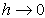, а  і зберігаючи при цьому величину mh=t сталою, отримаємо, що число заявок, що надійшли Х(t) на інтервалі часу (0, t) має розподіл імовірностей
і зберігаючи при цьому величину mh=t сталою, отримаємо, що число заявок, що надійшли Х(t) на інтервалі часу (0, t) має розподіл імовірностей
яке називається розподілом Пуассона.
Механізм обслуговування
Другою компонентою СМО є кількісна характеристика обслуговування, необхідного окремій заявці. Назвемо цю характеристику довжиною заявки.
Одиниця вимірювання довжини заявки змінюється залежно від природи обслуговуючого пристрою та заявок.
Якщо обслуговуючий пристрій - ЦП, а заявки - програми, то довжина може вимірюватися у командах.
Якщо обслуговуючий пристрій - лінія передавання даних, а заявки - повідомлення або дані, що передаються, то довжина може вимірюватися в бітах або байтах.
Якщо сукупність заявок однорідна, то припускається, що довжини різних заявок є незалежними в сукупності й однаково розподіленими випадковими величинами.
В більш складних ситуаціях заявки можна розділити на кілька різних типів, кожен з яких складе однорідну сукупність заявок.
Щоб задати механізм обслуговування повністю, крім розподілу довжин заявок необхідно також задати швидкодію обслуговувального пристрою.
Позначимо величину швидкодії через С.
Одиниця виміру швидкодії залежить від типу обслуговування.
Якщо обслуговуючий пристрій - ЦП, то швидкодію вимірюють в операціях на секунду.
Якщо обслуговуючий пристрій - канал або лінія передачі даних, то швидкодія, тобто швидкість передачі даних, вимірюється в бітах на секунду.
Якщо довжина заявки дорівнює S [одиниць обслуговування] і вона обслуговується пристроєм зі швидкодією С [одиниць обслуговування на секунду], то відношення S/C [секунд] називається тривалістю обслуговування заявки.
Його середнє значення  [секунд] називається середньою тривалістю обслуговування, а зворотна до неї величина
[секунд] називається середньою тривалістю обслуговування, а зворотна до неї величина  називається інтенсивністю обслуговування.
називається інтенсивністю обслуговування.
Нехай  - тривалість обслуговування k-ї. заявки.
- тривалість обслуговування k-ї. заявки.
Якщо випадкові величини 
 , незалежні в сукупності, однаково розподілені й не залежать від вхідного потоку, то таке обслуговування називається рекурентним.
, незалежні в сукупності, однаково розподілені й не залежать від вхідного потоку, то таке обслуговування називається рекурентним.
У деяких випадках швидкодія змінюється в залежності від завантаження обслуговуючого пристрою.
Як приклад розглянемо СМО з l обслуговувальними пристроями і загальною чергою.
Заявка, що надійшла, обслуговується будь-яким вільним обслуговуючим пристроєм.
Для простоти припустимо, що всі обслуговуючі пристрої мають однакову швидкодію, скажімо, С.
Визначимо стан СМО як число заявок, що перебувають у ній n (як на обслуговуванні, так і в черзі).
Тоді загальна швидкодія станції обслуговування, що складається з l обслуговуючих пристроїв, залежить від стану n і визначається формулою
Дисципліна обслуговування
Найбільш простою і добре відомою є дисципліна обслуговування "перший прийшов-перший обслужений", за якої заявки обслуговуються повністю без переривань у порядку їхнього надходження, причому заявка, що надійшла в момент простою обслуговуючого пристрою, відразу ж починає обслуговуватися.
Легко уявити собі ситуації, коли ця дисципліна небажана. Наприклад, часто буває, що одні заявки важливіші за інші і заслуговують на переважне обслуговування.
Поділ заявок на групи за ступенем їхньої важливості здійснюється за допомогою пріоритетних дисциплін обслуговування, і відповідна система масового обслуговування називається системою з пріоритетами.
Правило призначення пріоритетів визначає порядок, у якому обслуговуватимуться заявки, що очікують.
Пріоритетні дисципліни обслуговування бувають двох типів: з абсолютними пріоритетами і з відносними пріоритетами.
Якщо обслуговування поточної заявки переривається при появі заявки з вищим пріоритетом і остання негайно починає обслуговуватися, то кажуть, що має місце дисципліна обслуговування з абсолютними пріоритетами.
Якщо переривання обслуговування не допускається, то має місце дисципліна обслуговування з відносними пріоритетами.
1.3 Типи розподілів інтервалів між надходженнями заявок і тривалості обслуговування
1. Експоненціальний розподіл - найпростіший для отримання аналітичних результатів. За експоненціального розподілу тривалості обслуговування величина, обернена до середньої тривалості обслуговування, є інтенсивністю обслуговування.
2. Гамма-розподіл і розподіл Ерланга - спостерігається в системі, що складається з декількох послідовно з'єднаних пристроїв, і обслуговування нової заявки на першому етапі може розпочатися тільки в момент виходу заявки із системи після завершення останнього етапу. Тоді загальна тривалість обслуговування заявки на всіх етапах має розподіл Ерланга.
3. Гіперекспоненціальний розподіл - описує розподіл тривалості обслуговування заявки в системі із сукупності паралельних пристроїв.
Для визначення типу системи масового обслуговування часто використовують позначення вигляду A/B/l, де символи A і B позначають вхідний потік і розподіл тривалості обслуговування відповідно, а l - кількість паралельних пристроїв обслуговування в СМО.
У разі обмеження на допустиму кількість заявок використовується додатковий параметр - A/B/l/m.
Наприклад, під системою M/M/1 розуміють СМО з одним обслуговувальним приладом, пуасонівським вхідним потоком і експоненціально розподіленою тривалістю обслуговування.
Показники якості
Математична модель реальної системи будується для того, щоб оцінити якісь показники якості цієї системи.
Для систем із чергами необхідно насамперед оцінити завантаженість системи. Найпростішою мірою завантаженості є навантаження 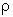:
Якщо величини, що стоять у чисельнику і знаменнику цього відношення, дорівнюють відповідно  и
и  то
то  .
.
Якщо навантаження перевершує одиницю, то це означає, що заявки надходять швидше, ніж їх встигає обробляти обслуговуючий пристрій.
У СМО з l паралельними обслуговуючими пристроями на кожен із них припадає в середньому  заявок за одиницю часу.
заявок за одиницю часу.
Тому навантаження в такій СМО може бути підняте до величини l.
З навантаженням тісно пов'язаний інший показник якості - коефіцієнт використання, або коефіцієнт завантаження обслуговуючого пристрою.
Цей показник якості, що позначається через u, визначається як частка часу, протягом якого обслуговуючий пристрій зайнятий.
Розглянемо досить тривалий інтервал часу Т. У СМО з l обслуговуючими пристроями на кожний з них у середньому за час Т прийде по 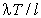 заявок, якщо припустити, що потік заявок рівномірно розподіляється по l пристроям.
Оскільки кожна заявка вимагає в середньому тривалості обслуговування  , то загальний середній час зайнятості обслуговуючого пристрою становитиме
, то загальний середній час зайнятості обслуговуючого пристрою становитиме  .
.
Поділивши цю величину на Т, отримаємо  .
.
Оскільки обслуговуючий пристрій не може бути зайнятий понад 100 % часу, то коефіцієнт використання не може перевершувати одиницю.
Таким чином, отримуємо такий вираз для коефіцієнта використання СМО з l обслуговуючими пристроями:
Під час аналізу моделей обчислювальних систем одним з основних показників якості слугує пропускна здатність.
Ця величина визначається як середня кількість заявок, обслужених за одиницю часу.
У СМО з l обслуговуючими пристроями за кожну одиницю часу в середньому завершується обслуговування  заявок, звідки випливає, що пропускна здатність дорівнює
заявок, звідки випливає, що пропускна здатність дорівнює
Таким чином, пропускна здатність збігається з інтенсивністю надходження заявок  до тих пір, поки
до тих пір, поки  менше максимальної інтенсивності обслуговування
менше максимальної інтенсивності обслуговування  вище якої пропускна здатність не піднімається.
вище якої пропускна здатність не піднімається.
З точки зору заявки найважливішим показником якості, вочевидь, є час, який вона проводить в очікуванні обслуговування.
Визначимо час очікування Wj заявки j, рівним відрізку часу від моменту її надходження в систему до моменту початку її обслуговування, а час відповіді Тj, рівним відрізку часу від моменту надходження заявки j у систему до моменту завершення її обслуговування.
Таким чином, маємо таке просте співвідношення (індекс j опущено):
Останньою мірою завантаженості, яка нас цікавить, є "довжина черги".
Нехай випадковий процес Q(t) є число заявок, які очікують обслуговування в момент часу t.
Аналогічно, визначимо N(t) як кількість заявок, що перебувають у системі або в черзі, або на обслуговуванні.
Процес N(t) називають довжиною черги.
У СМО з l обслуговуючими пристроями Q(t) и N(t) пов'язані співвідношенням
Вивчення розподілу числа заявок, які очікують обслуговування, потрібне, наприклад, під час оцінки обсягу буферної пам'яті, необхідної для розміщення заявок, що надходять.
Процеси Q(t) і Ni(t)- це випадкові процеси з неперервним часом.
Дві з найважливіших формул теорії масового обслуговування відображають зв'язок між середнім часом відповіді (часом очікування) і середнім числом заявок, які перебувають у системі (очікують на обслуговування)
1.4 Моделі, що описуються процесами народження і загибелі
Визначення процесу народження і загибелі почнемо з введення формули:
яка буде описувати число заявок системі, при цьому будемо вважати:
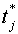 - момент часу, завершення заявки j.
Нехай D(t) буде процесом, який в момент часу t набуватиме значень, що дорівнюють числу всіх моментів  , які передували значенню t. І визначимо процес D(t), як процес лічби. A(t) - процес, який прийматиме значення числа заявок, що надійшли в систему на інтервалі часу (0, t).
, які передували значенню t. І визначимо процес D(t), як процес лічби. A(t) - процес, який прийматиме значення числа заявок, що надійшли в систему на інтервалі часу (0, t).
Якщо ж під N(t), у кожен момент часу ми розумітимемо розмір деякої популяції, то під процесом A(t) можна розуміти загальне число точок народження до часу t, а D(t) - як число загиблих членів популяції. Виходячи з цього визначення N(t) - можна назвати процесом загибелі та народження.
Випадковий процес N(t) (число заявок, які очікують обслуговування в момент часу t) називатиметься процесом народження і загибелі, якщо його перехідні ймовірності:
не будуть залежати від t (будуть стаціонарні) і задовольнятимуть чотирьом умовам:
для  .
.
де  - інтенсивність народження і
- інтенсивність народження і  - інтенсивність загибелі в стані m=0,1,2, що приймає процес N(t).
- інтенсивність загибелі в стані m=0,1,2, що приймає процес N(t).
0(h) - імовірність останньої події, що прагне до нуля швидше, ніж h.
Введемо поняття  - ймовірність того, що N(t) знаходиться в стані n в момент часу t:
- ймовірність того, що N(t) знаходиться в стані n в момент часу t:
Щоб знайти  помітимо, що в момент часу (t+h) N(t)=n тоді, якщо виконується одна з умов:
помітимо, що в момент часу (t+h) N(t)=n тоді, якщо виконується одна з умов:
N(t)=n і за час (t, t+h) не відбувається ніяких змін;
в момент часу t, N(t)  n
n  n взаємно виключають один одного
n взаємно виключають один одного
в момент часу t, N(t)  n+
n+
в момент часу (t, t+h) здійснюється два або більше переходи в n.
Тому з четвертої умови слідує:
Якщо обидві частини рівняння розділити на h, і з правої в ліву перенести  , враховуючи, що h
, враховуючи, що h  0, отримаємо вираз:
0, отримаємо вираз:
Це рівняння виконується n  1. Якщо прийняти n=0, ми отримаємо рівняння вигляду:
1. Якщо прийняти n=0, ми отримаємо рівняння вигляду:
Якщо в початковий момент часу N(0)=i, то виконується умова 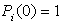, 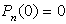 при  . Таким чином, ми отримали умови існування (3.1) і єдності (3.2) розв'язку системи.
. Таким чином, ми отримали умови існування (3.1) і єдності (3.2) розв'язку системи.
Щоб випадковий процес N(t) називався процесом народження і загибелі, потрібно знайти усталений (не залежний від t) розподіл імовірності  , яке задовольняло б двом виведеним розв'язкам.
, яке задовольняло б двом виведеним розв'язкам.
Щоб довести це, треба ввести таке визначення: усталене рішення (якщо існує такий розподіл) єдине і для кожного стану n маємо 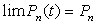.
Для знаходження 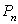(n=0, 1, 2...) можна використати  лінійних рівнянь:
лінійних рівнянь:
які виводяться з рівнняння (3.1) з умовою, що  .
.
де с - постійна, n=1,2,.... З (3.2) слідує 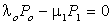, отже, с=0 у (3.4) і виходить така система рекурентних рівнянь:
де ліва частина - це інтенсивність переходу зn в n-1, а права частина це інтенсивність переходу з n-1 в n. Звідси за умови балансування граф переходів матиме такий вигляд:

Тепер же стаціонарні ймовірності будуть обчислюватися рекурентно:
 визначається за умовою
визначається за умовою  , так як
, так як  - розподіл імовірностей. Таким чином, якщо ряд:
- розподіл імовірностей. Таким чином, якщо ряд:
збігається, то, позначаючи його суму через , отримаємо
, отримаємо
Для прикладу процесів народження і загибелі назвемо і коротко визначимо кілька СМО:
Найпростіша система М/М/1
Розглянемо СМО з одним обслуговуючим пристроєм, пуасонівським вхідним потоком із параметром  і експоненціально розподіленою з параметром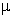 тривалістю обслуговування. Легко бачити, що кількість заявок N(t), що перебувають у системі М/М/1 у момент часу t, описується процесом народження і загибелі з
і експоненціально розподіленою з параметром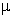 тривалістю обслуговування. Легко бачити, що кількість заявок N(t), що перебувають у системі М/М/1 у момент часу t, описується процесом народження і загибелі з  и
и  (n=1, 2, ...). У цьому разі рекурентне співвідношення (3.6) набуває вигляду:
(n=1, 2, ...). У цьому разі рекурентне співвідношення (3.6) набуває вигляду:  , де 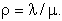. Спираючись на формули, виведені для процесу народження і загибелі:
, де 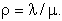. Спираючись на формули, виведені для процесу народження і загибелі:
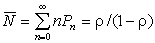 - середня довжина черги;
 - стаціонарна ймовірність того, що в системі перебуває n заявок.
- стаціонарна ймовірність того, що в системі перебуває n заявок.
Система М/М/1 з однорівневим керуванням
Розглянемо систему М/М/1, у якій інтенсивності надходження заявок  і їх обслуговування
і їх обслуговування  залежать від довжини черги таким чином:
залежать від довжини черги таким чином:
Таку зміну інтенсивностей вхідного потоку й обслуговування природно назвати однорівневим управлінням.
У разі наявності обмеження на кількість заявок у черзі m для системи M/M/1/m стаціонарний розподіл має вигляд:
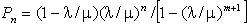, n = 0, 1, ..., m
Двофазна модель обчислювальної системи
Однією з найпростіших моделей мультипрограмної ОС з постійним рівнем мультипрограмування є замкнута двофазна СМО, представлена на рис. 3.3.

Перший обслуговуючий пристрій інтерпретується як центральний процесор (ЦП), другий - як пристрій вводу-виводу (ПВВ), що об'єднує канал і зовнішню пам'ять (ЗП), а заявками є m програм, що одночасно перебувають в оперативній пам'яті. Передбачається, що в процесі виконання кожної програми виникають запити до ЗП, що відповідає переміщенню заявки в розглянутій СМО з черги 1 у чергу 2. Після задоволення запиту до ЗП програма готова до виконання ЦП і цьому відповідає переміщення заявки з черги 2 у чергу 1. Передбачається, що тривалості обслуговування заявок незалежні між собою, на кожній фазі окремо і на різних фазах і що обслуговування заявок відбувається в порядку їх надходження.
Система М/М/l/
Нехай N(t) - число заявок, що перебувають на обслуговуванні в момент часу t. Если N(t)=n  l, то n заявок одночасно обслуговуються різними обслуговувальними пристроями. Якщо ж N(t)=n > l, то в системі очікуватимуть обслуговування n-l заявок. У такій ситуації маємо процес народження і загибелі з параметрами
l, то n заявок одночасно обслуговуються різними обслуговувальними пристроями. Якщо ж N(t)=n > l, то в системі очікуватимуть обслуговування n-l заявок. У такій ситуації маємо процес народження і загибелі з параметрами  (n=0, 1, 2...),
(n=0, 1, 2...),  .
.
Система з квазівипадковим джерелом заявок
Задача, що розглядається в цьому пункті, відома в літературі як задача про обслуговування (ремонт) одним майстром (оператором) К машин. Кожна машина може перебувати в одному з двох станів: "робочому" і "неробочому" (що потребує ремонту). У разі поломки машини, що призводить до неробочого стану, вона стає в чергу на ремонт. Якщо майстер (пристрій, що обслуговує) вільний, то він негайно приступає до ремонту (обслуговування) машини; інакше поламана машина повинна чекати обслуговування. Нехай будь-яка справна машина може зламатися в проміжок часу (t, t+h) з ймовірністю vh+0(h) і поломки справних машин відбуваються незалежно від станів інших машин. Таким чином, якщо машина справна в момент часу t, то проміжки часу від t до моменту її поломки мають експоненціальний розподіл 1/v. За цих припущень кажуть, що К машин утворюють квазівипадкове джерело заявок. Легко бачити, що загальний потік заявок (поломок) від К незалежних джерел (машин) буде процесом тільки народження 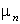 з інтенсивністю
Припустимо далі, що тривалості обслуговування розподілені експоненціально із середнім  . Таким чином число заявок N(t), що перебувають у системі в момент часу t, є процесом народження і загибелі з інтенсивністю народження (зазначеною вище) та інтенсивністю загибелі
. Таким чином число заявок N(t), що перебувають у системі в момент часу t, є процесом народження і загибелі з інтенсивністю народження (зазначеною вище) та інтенсивністю загибелі
ОС, що працює під управлінням операційної системи, генерує повідомлення, які потребують дій оператора. При інтенсивному завантаженні ОС і підтримці рівня мультипрограмування, що дорівнює чотирьом-шести, в середньому за годину на системну консоль надходить кілька сотень різних повідомлень. Для оцінки завантаження оператора можна застосувати розглянуту в попередньому пункті модель, якщо вважати, що числу машин К відповідає рівень мультипрограмування (тобто кількість програм, що одночасно перебувають в оперативній пам'яті), а обслуговуючому пристрою (майстру) відповідає оператор, який реагує на повідомлення (заявки), що надходять від програм (джерела заявок).
1.6 Модель багатодоступної обчислювальної системи
Розглянуту модель схематично показано на рис. 3.4. Тут К машинам відповідає К термінальних користувачів, а майстру - багатодоступна обчислювальна система, тобто ОС, що обслуговує деяку сукупність терміналів, поломці машини відповідає видання запиту до ОС із терміналу.

Загальні властивості
Нехай  - пропускная способность.
Т.е. число заявок, завершающих обслуживание в единицу времени в рассматриваемой системе.
Тогда интенсивность поступлений и уходов заявок из блока, очерченного
на рис. 5 пунктиром, равна
- пропускная способность.
Т.е. число заявок, завершающих обслуживание в единицу времени в рассматриваемой системе.
Тогда интенсивность поступлений и уходов заявок из блока, очерченного
на рис. 5 пунктиром, равна  .
Визначимо випадкову величину U як час обмірковування користувача,
що дорівнює інтервалу часу з моменту завершення виконання його попереднього запиту
до ОС до моменту видання ним наступного запиту до ОС, і час відповіді Т
як інтервал часу з моменту видання запиту користувачем (введення з термінала)
до моменту завершення його виконання системою. Час відповіді і час обмірковування
в сумі складають цикл однієї взаємодії користувача з ОС. З формули Літтла отримуємо
.
Визначимо випадкову величину U як час обмірковування користувача,
що дорівнює інтервалу часу з моменту завершення виконання його попереднього запиту
до ОС до моменту видання ним наступного запиту до ОС, і час відповіді Т
як інтервал часу з моменту видання запиту користувачем (введення з термінала)
до моменту завершення його виконання системою. Час відповіді і час обмірковування
в сумі складають цикл однієї взаємодії користувача з ОС. З формули Літтла отримуємо
 , тобто середнє значення циклу однієї
взаємодії користувача з ОС в усталеному режимі
, тобто середнє значення циклу однієї
взаємодії користувача з ОС в усталеному режимі
Зазначимо, що це співвідношення має місце за будь-якої дисципліни обслуговування. Для його справедливості не вимагається також незалежності часів обмірковування U і спеціальних припущень про вид їхнього розподілу. Усе, що потрібно, - це існування усталеного режиму СМО.
Нехай  - ймовірність простою
обслуговуючого пристрою в усталеному режимі і S - середня тривалість
обслуговування одного запиту. Тоді в усталеному режимі обслуговуючий пристрій
може обробити
- ймовірність простою
обслуговуючого пристрою в усталеному режимі і S - середня тривалість
обслуговування одного запиту. Тоді в усталеному режимі обслуговуючий пристрій
може обробити  запитів
за одиницю часу, тобто.
запитів
за одиницю часу, тобто.
Це співвідношення також справедливе за досить загальних умов. Єдине обмеження полягає в тому, щоб пристрій, який обслуговує, не простоював за наявності не обслугованих заявок, інакше тривалості обслуговування заявок залежатимуть від дисципліни обслуговування.
Середній час відповіді:
Визначимо інтенсивність обслуговування: = 1/S та інтенсивність надходження заявок (запитів):  . Позначимо їхнє відношення через 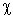, тобто.
. Позначимо їхнє відношення через 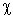, тобто.
Тоді нормований середній час відповіді (тобто T/S) дорівнює
Під час виведення останньої формули знову не робили жодних спеціальних припущень. Ця формула правильна практично за будь-яких припущень: розподіли U и S можуть бути довільними, а дисципліна обслуговування - будь-якою, що не допускає простоїв обслуговуючого пристрою за наявності не обслужених заявок. Ба більше, часи обмірковування U і тривалості обслуговування S не обов'язково мають бути послідовностями незалежних однаково розподілених випадкових величин. Середня довжина черги в сталому режимі N (число заявок (запитів), які очікують і перебувають на обслуговуванні) виходить із формули Літтла:  , що можна переписати, як 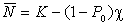.
, що можна переписати, як 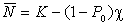.
Час відповіді
Якість обслуговування окремого термінального користувача характеризується середнім часом відповіді системи. Позначаючи нормований середній час відповіді через Y(K), у розділі "Система з квазівипадковим джерелом заявок" маємо:
 .
.
Підставляючи в останню формулу вираз (3.2) для 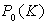, отримаємо
Для обчислення Y(K) зручно скористатися таким рекурентним співвідношенням:
Щільність розподілу часу відповіді отримуємо в результаті згортки щільності:
і щільності розподілу S:
Численные значения распределения можно получать с помощью таблиц распределения Пуассона.
1.7 Експоненціальні системи зі змінними параметрами.
Система з гістерезисним керуванням
Розглянемо СМО з одним обслуговувальним приладом і дисципліною обслуговування "перший прийшов - перший обслужений", яка працює у двох режимах. У режимі i(i = 1, 2), на вхід системи надходить пуасонівський потік заявок із параметром  і тривалістю обслуговування має експоненціальний розподіл із середнім 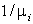. Перехід із режиму 1 у режим 2 відбувається, коли черга досягає значення
і тривалістю обслуговування має експоненціальний розподіл із середнім 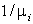. Перехід із режиму 1 у режим 2 відбувається, коли черга досягає значення  ; повернення в режим 1 відбувається, коли черга зменшується до значення
; повернення в режим 1 відбувається, коли черга зменшується до значення  , де 0 <
, де 0 <  <
<  . Таку зміну інтенсивності вхідного потоку й обслуговування називають гістерезисним управлінням.
. Таку зміну інтенсивності вхідного потоку й обслуговування називають гістерезисним управлінням.
Далі, для простоти покладемо  і позначимо
і позначимо  .
.
Стани системи визначаються парою (n, i), де n - довжина черги, а i - номер режиму. Занумеруємо ці стани послідовними числами, кожному стану (n, i) при n  [0,
[0,  + q], де q =
+ q], де q =  -
-  - 1, поставимо у відповідність число n і кожному стану (n, 2) при n >
- 1, поставимо у відповідність число n і кожному стану (n, 2) при n >  + q поставимо у відповідність n + q.
+ q поставимо у відповідність n + q.
Співвідношення для стаціонарних імовірностей:

Середня довжина черги:

1.8 Двофазна модель обчислювальної системи зі змінним режимом роботи
Нехай замкнута двофазна СМО містить m заявок, які обслуговуються у 2 режимах. Розподіли тривалостей обслуговування на першій і другій фазах є експоненціальними з параметрами  и
и  (1 і 2 режим). Перехід з одного режиму в інший відбувається через експоненціально розподілені проміжки часу із середнім 1/n, i=1, 2.
(1 і 2 режим). Перехід з одного режиму в інший відбувається через експоненціально розподілені проміжки часу із середнім 1/n, i=1, 2.
Використовуючи властивості відсутності післядії, цю модель можна звести до однофазної СМО зі скінченним числом місць для очікування, в якій:
в режимі i (i=1, 2), вхідний потік заявок є пуасонівським, з параметром  ,
,
а тривалість обслуговування має експоненціальний розподіл із середнім .
Якщо {P(n1, n2, i)}, n1 + n2 = m, - спільний стаціонарний розподіл числа заявок у чергах 1 і 2 двофазної СМО в режимі i, і { } - стаціонарний розподіл числа заявок у режимі i у відповідній однофазній СМО зі скінченним числом місць для очікування, то:
} - стаціонарний розподіл числа заявок у режимі i у відповідній однофазній СМО зі скінченним числом місць для очікування, то:
P(m - n, n, i) =  ; i = 1; n = 0, 1, 2...m.
; i = 1; n = 0, 1, 2...m.
1.9 Формули для обчислення стаціонарних імовірностей

Питання для самоперевірки
1. Яка мета створення черги? Приклади черг.
2. Які програми називають послідовно використовуваними?
3. Перелічіть основні елементи системи масового обслуговування.
4. Які існують характеристики вхідного потоку заявок?
5. Що таке пропускна здатність? Формула розрахунку.
6. Що відображають дві найважливіші формули теорії масового обслуговування?
7. Опишіть систему М/М/1 з однорівневим керуванням.
8. Чим характеризується якість обслуговування окремого термінального користувача?